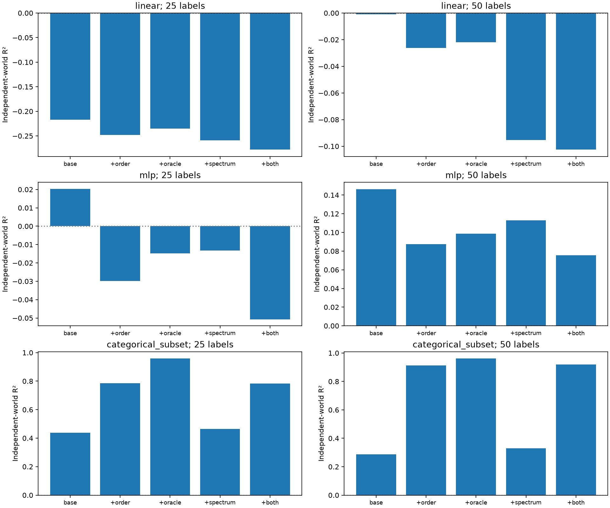

预测于 2026-10-05T14:39:02.054311+00:00 冻结，共 6480 条。独立行为条件已完成 36/36，当前可核对 6480 条预测；每个实际结果对应五个预测规则。完整目标、条件与预算均保留，负 R² 和负迁移收益照常报告。
预测器只在原始五组、三个输入基、三个初始化的行为结果上拟合。复核使用 P、M1、M2、三个新的输入基及三个初始化；每个源任务在四个物理输入坐标上均非零。这三个源公式已在拟合集中出现，所以检验的是新输入基与新模型运行，尚未检验新的抽象任务组合。
基线包含源学习准确率、学习曲线面积、源与目标物理系数支撑大小，以及目标、初始化和原输入基固定效应。未知输入基使用训练基效应的平均值。岭回归惩罚固定为 1，不用本次行为结果重新拟合、选参数或选择预测规则。

| 读出 | 标签 | 预测规则 | 原组合留出 R² | 独立基 R² | 相对基线 ΔR² | 独立基 MAE | 结果数 |
|---|---|---|---|---|---|---|---|
| linear | 25 | baseline | 0.139 | -0.217 | 0.000 | 0.0808 | 216 |
| linear | 25 | plus_composition | 0.156 | -0.248 | -0.031 | 0.0827 | 216 |
| linear | 25 | plus_oracle_occupancy | 0.159 | -0.235 | -0.018 | 0.0819 | 216 |
| linear | 25 | plus_target_spectrum | 0.176 | -0.259 | -0.041 | 0.0793 | 216 |
| linear | 25 | plus_both | 0.187 | -0.278 | -0.061 | 0.0808 | 216 |
| linear | 50 | baseline | 0.152 | -0.001 | 0.000 | 0.0783 | 216 |
| linear | 50 | plus_composition | 0.160 | -0.026 | -0.025 | 0.0798 | 216 |
| linear | 50 | plus_oracle_occupancy | 0.171 | -0.022 | -0.021 | 0.0797 | 216 |
| linear | 50 | plus_target_spectrum | 0.305 | -0.095 | -0.094 | 0.0767 | 216 |
| linear | 50 | plus_both | 0.303 | -0.103 | -0.102 | 0.0772 | 216 |
| mlp | 25 | baseline | 0.283 | 0.020 | 0.000 | 0.0703 | 216 |
| mlp | 25 | plus_composition | 0.303 | -0.030 | -0.050 | 0.0751 | 216 |
| mlp | 25 | plus_oracle_occupancy | 0.319 | -0.015 | -0.035 | 0.0739 | 216 |
| mlp | 25 | plus_target_spectrum | 0.299 | -0.013 | -0.034 | 0.0696 | 216 |
| mlp | 25 | plus_both | 0.313 | -0.051 | -0.071 | 0.0738 | 216 |
| mlp | 50 | baseline | 0.439 | 0.146 | 0.000 | 0.0954 | 216 |
| mlp | 50 | plus_composition | 0.463 | 0.087 | -0.059 | 0.1004 | 216 |
| mlp | 50 | plus_oracle_occupancy | 0.483 | 0.099 | -0.048 | 0.0998 | 216 |
| mlp | 50 | plus_target_spectrum | 0.520 | 0.113 | -0.033 | 0.0919 | 216 |
| mlp | 50 | plus_both | 0.529 | 0.075 | -0.071 | 0.0956 | 216 |
| categorical_subset | 25 | baseline | 0.275 | 0.438 | 0.000 | 0.0907 | 216 |
| categorical_subset | 25 | plus_composition | 0.877 | 0.786 | 0.347 | 0.0714 | 216 |
| categorical_subset | 25 | plus_oracle_occupancy | 0.961 | 0.959 | 0.521 | 0.0296 | 216 |
| categorical_subset | 25 | plus_target_spectrum | 0.291 | 0.465 | 0.027 | 0.0973 | 216 |
| categorical_subset | 25 | plus_both | 0.875 | 0.784 | 0.346 | 0.0717 | 216 |
| categorical_subset | 50 | baseline | 0.374 | 0.287 | 0.000 | 0.1255 | 216 |
| categorical_subset | 50 | plus_composition | 0.936 | 0.914 | 0.626 | 0.0534 | 216 |
| categorical_subset | 50 | plus_oracle_occupancy | 0.981 | 0.961 | 0.674 | 0.0383 | 216 |
| categorical_subset | 50 | plus_target_spectrum | 0.398 | 0.330 | 0.043 | 0.1330 | 216 |
| categorical_subset | 50 | plus_both | 0.935 | 0.918 | 0.631 | 0.0529 | 216 |
linear、mlp 的预测目标是测试准确率减去相同输入基、初始化、目标、预算和读出规则的随机编码器准确率；categorical_subset 的预测目标是通用类别子集查表的准确率。五种规则分别加入最小源答案组合阶数、理想已知子集的查表覆盖率、目标字符方向的隐藏方差比例，或同时加入组合阶数和字符方差比例。
训练前登记 · 事先保存的预测及拟合权重 · 逐结果核对 · 全部评分 · 逐输入基与初始化评分 · 核验 · PDF 图 · 完整独立行为报告